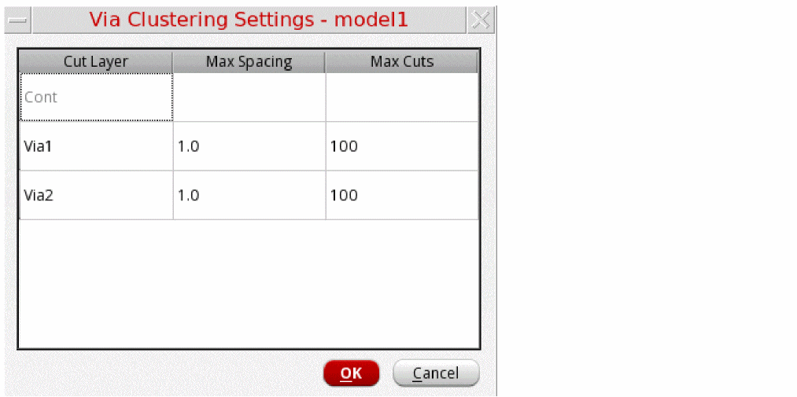
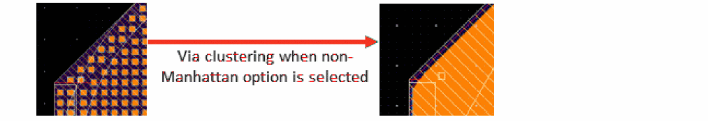
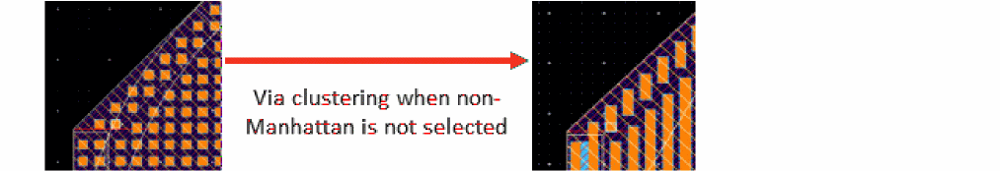
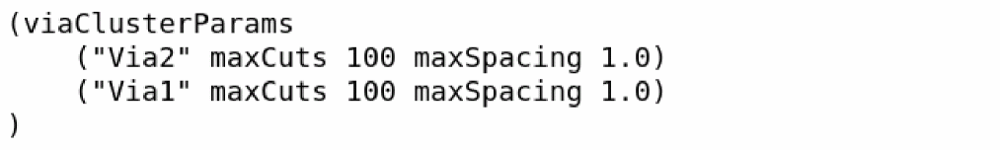

Specifying Options for Via Clustering
Via clustering requires the maximum spacing and maximum number of cuts for each via layer. Specifying options for via clustering involves configuring these settings and enabling via clustering.
To specify options for via clustering:
- Select a model in the Models table of the Electromagnetic Solver assistant.
-
On the Pre-Process tab of the assistant, select the Cluster Vias check box in the Via Cluster group.
This step enables via clustering for your model. -
Click Configure to open the Via Clustering Settings - model-name form.
The Via Clustering Settings form is displayed.
 -
Review the settings displayed in the table. It shows the default values for maximum spacing and maximum cuts that the tool read from the
default.viaclfile while creating a new model. For the cut layer names not found in thedefault.viaclfile, it leaves the cells blank. - If you need to use a different configuration for a specific model, change the imported values.
- Add details for the blank cells, if any.
- Click OK to close the Via Clustering Settings form.
-
If your layout contains vias that are not aligned in orthogonal rectangles, select Merge non-Manhattan Vias in the Via Cluster group on the Pre-Process tab to cluster all vias. This setting ignores the Max Cuts via cluster setting and clusters the maximum possible vias.
When this option is not selected, vias that are not aligned as rectangles are not clustered.

Saving Default Parameters for Via Clustering
You can specify the default settings for via clustering in the default.viacl file saved at the directory location specified by the processCornerDirectory environment variable.
The following example shows the format in which values are specified in the default.viacl file:

Any new model created in the Electromagnetic Solver assistant reads the default settings from this file and populates the values in the Via Clustering Settings - <model-name> form.
Related Topics
Return to top